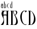

Scripting functions¶
The built in procedures are very similar to the menu items with the same names. Often the description here is sketchy, look at the menu item for more information.
I use a syntax like:
Generate(filename[,bitmaptype[,fmflags[,res[,mult-sfd-file[,namelist-name]]]]])
To mean that arguments after the first are optional. However if you wish to set the fourth argument you must specify the second and third arguments too.
-
AddAccent(accent[, pos])¶ There must be exactly one glyph selected. That glyph must contain at least one reference (and the least recently added reference must be the base glyph – the letter on which the accent is placed). The first argument should be either the glyph-name of an accent, or the unicode code point of that accent (and it should be in the font). The second argument, if present indicates how the accent should be positioned… if omitted a default position will be chosen from the unicode value for the accent, this argument is the or of the following flags:
- 0x100
Above
- 0x200
Below
- 0x400
Overstrike
- 0x800
Left
- 0x1000
Right
- 0x4000
Center Left
- 0x8000
Center Right
- 0x10000
Centered Outside
- 0x20000
Outside
- 0x40000
Left Edge
- 0x80000
Right Edge
- 0x100000
Touching
-
AddAnchorClass(name, type, lookup-subtable-name)¶ These mirror the values of the Anchor class dialog of . The first argument should be a utf8 encoded name for the anchor class. The second should be one of the strings “default”, “mk-mk”, or “cursive”. The third should be a lookup subtable name.
-
AddAnchorPoint(name, type, x, y[, lig-index])¶ Adds an AnchorPoint to the currently selected glyph. The first argument is the name of the AnchorClass. The second should be one of the strings: “mark”, “basechar” (or “base”), “baselig” (or “ligature”), “basemark”, “cursentry” (or “entry”) , “cursexit” (or “exit”) or “default” (“default” tries to guess an appropriate setting for you). The next two values specify the location of the point. The final argument is only present for things of type “baselig”.
-
AddDHint(x1, y1, x2, y2, unit.x, unit.y)¶ Adds a diagonal hint. A diagonal hint requires two points on oposite sides of the stem and a unit vector in the direction of the stem.
-
AddExtrema([all])¶ If a spline in a glyph reaches a maximum or minimum x or y value within a spline then break the spline so that there will be a point at all significant extrema. (If this point is too close to an end-point then the end-point itself may be moved. There are various other caveats. See for more information). If the “all” argument is specified and is a nonzero integer, then all extrema will be added; otherwise, some that would be very close to existing endpoints will not be added.
-
AddHHint(start, width)¶ Adds horizontal stem hint to any selected glyphs. The hint starts at location “start” and is width wide. A hint will be added to all selected glyphs.
-
AddInstrs(thingamy, replace, instrs)¶ Where thingamy is a string, either “fpgm” or “prep” in which case it refers to that truetype table (which will be created if need be), or a glyph-name in which case it refers to that glyph, or a null string in which case any selected characters will be used.
Where replace is an integer. If zero then the instructions will be appended to any already present. If non-zero then the instructions will replace those already present.
And instrs is a string containing fontforge’s human readable version of tt instructions, as “
IUP[x]\nIUP[y]”
-
AddLookup(name,type,flags,features-script-lang-array[,after-lookup-name)¶ Creates a new lookup with the given name, type and flags. It will tag it with any indicated features. The type of one of
gsub_single
gsub_multiple
gsub_alternate
gsub_ligature
gsub_context
gsub_contextchain
gsub_revesechain
morx_indic
morx_context
morx_insert
gpos_single
gpos_pair
gpos_cursive
gpos_mark2base
gpos_mark2ligature
gpos_mark2mark
gpos_context
gpos_contextchain
kern_statemachine
The lookup flags define what glyphs to include or ignore.
- 0
Include all glyphs
- 8
Ignore mark_class_cnt
- 16
Ignore mark_set_cnt
A feature-script-lang array is an array with one entry for each feature (there may be no entries if there are no features). Each entry is itself a two element array, the first entry is a string containing a 4 letter feature tag, and the second entry is another array (potentially empty) with an entry for each script for which the feature is active. Each entry here is itself a two element array. The first element is a 4 letter script tag and the second is an array of languages. Each entry in the language array is a four letter language. Example: [[“liga”,[[“latn”,[“dflt”]]]]]
The optional final argument allows you to specify the ordering of the lookup. If not specified the lookup will be come the first lookup in its table.
-
AddLookupSubtable(lookup-name, new-subtable-name[, after-subtable])¶ Creates a new subtable within the specified lookup. The optional final argument allows you to specify the ordering within the lookup. If not specified this subtable will be first in the lookup.
-
AddPosSub(subtable-name, variant-glyph-name(s))¶ -
AddPosSub(subtable-name, dx, dy, dadv_x, dadv_y) -
AddPosSub(subtable-name, other-glyph-name, dx1, dy1, dadv_x1, dadv_y1, dx2, dy2, dadv_x2, dadv_y2) One glyph must be selected. The arguments of the command depend on the type of the lookup containing the subtable.
-
AddSizeFeature(default-size[, range-bottom, range-top, style-id, array-of-lang-names])¶ This allows you to specify an OpenType ‘size’ feature. It will also set the TeX design size header value.
The ‘size’ feature has two formats. The simplest one specifies the optical design size for the font, the more complex one specifies that as well as a design range, a style id, and a list of language/name pairs (at least one of which must be in English).
The design range is a range of point sizes for which this font is to be preferred. For instance you might have a family of fonts with the following attributes:
Optical design size
Bottom of range
Top of range
Style name
18
13
72
Title
10
12.9
8.0
Text
6
7.9
5
Tiny
The list of language/name pairs should be an array of arrays. All the sub-arrays should have two entries, the first, an integer which represents an MS language id, the second a string containing the name of the style in that language.
New() AddSizeFeature(10,8,12.9,211,[[0x409,"Text"],[0x40c,"Texte"]])
This will set the current font to have a design size of 10 points, this font will then be used in preference to other fonts in its family if the requested size is between 8 and 12.9 points. The 211 is used by applications to associate font families into smaller groups based on optical size. The final argument specifies that this size be called “Text” in English and “Texte” in French (0x409 is the ms language code for US English, 0x40c is the code for French from France).
-
AddVHint(start, width)¶ Adds a vertical stem hint to any selected glyphs. The hint starts at location “start” and is width wide. A hint will be added to all selected glyphs.
-
ApplySubstitution(script, lang, tag)¶ All three arguments must be strings of no more that four characters (shorter strings will be padded with blanks to become 4 character strings). For each selected glyph this command will look up that glyph’s list of substitutions, and if it finds a substitution with the tag “tag” (and if that substitution matches the script and language combination) then it will apply the substitution– that is it will find the variant glyph specified in the substitution and replace the current glyph with the variant, and clear the variant.
FontForge recognizes the string “*” as a wildcard for both the script and the language (not for the tag though). So if you wish to replace all glyphs with their vertical variants:
SelectAll() ApplySubstitution("*","*","vrt2")
-
Array(size)¶ Allocates an array of the indicated size.
a = Array(10) i = 0; while ( i<10 ) a[i] = i++ endloop a[3] = "string" a[4] = Array(10) a[4][0] = "Nested array";
It can execute with no current font.
-
AskUser(question[, default-answer])¶ Asks the user the question and returns an answer (a string). A default-answer may be specified too. It can execute with no current font.
-
ATan2(val1, val2)¶ Returns the arc-tangent. See atan2(3) for more info. It can execute with no current font.
-
AutoCounter()¶ Generates (PostScript) counter masks for selected glyphs automagically.
-
AutoHint()¶ Generates (PostScript) hints for selected glyphs automagically.
-
AutoInstr()¶ Generates (TrueType) instructions for selected glyphs.
-
AutoKern(spacing, threshold, subtable-name[, kernfile])¶ (AutoKern doesn’t work well in general)
Guesses at kerning pairs by looking at all selected glyphs, store the new kerning pairs in the indicated subtable, or if a kernfile is specified, FontForge will read the kern pairs out of the file.
-
AutoTrace()¶ If you have either potrace or autotrace installed, this will invoke them on the selected glyphs to trace the background image and generate splines.
-
AutoWidth(spacing)¶ Guesses at the widths of all selected glyphs so that two adjacent “I” glyphs will appear to be spacing em-units apart. (if spacing is the negative of the em-size (sum of ascent and descent) then a default value will be used).
-
BitmapsAvail(sizes[, rasterized])¶ Controls what bitmap sizes are stored in the font’s database. It is passed an array of sizes. If a size is specified which is not in the font database it will be generated. If a size is not specified which is in the font database it will be removed. A size which is specified and present in the font database will not be touched.
If you want to specify greymap fonts then the low-order 16 bits will be the pixel size and the high order 16 bits will specify the bits/pixel. Thus 0x8000c would be a 12 pixel font with 8 bits per pixel, while either 0xc or 0x1000c could be used to refer to a 12 pixel bitmap font.
If you want to create blank strikes (with no glyphs in them) set the optional rasterized parameter to 0.
-
BitmapsRegen(sizes)¶ Allows you to update specific bitmaps in an already generated bitmap font. It will regenerate the bitmaps of all selected glyphs at the specified pixelsizes.
-
BuildAccented()¶ If any of the selected glyphs are accented, then clear them and create a new glyph by inserting references to the approriate base glyph and accents.
-
BuildComposite()¶ Similar to BuildAccented but will build any composite glyph – ligatures and what not.
-
BuildDuplicate()¶ Changes the encoding so that to encoding points share the same glyph.
-
CanonicalContours()¶ Orders the contours in the currently selected glyph(s) by the x coordinate of their leftmost point. (This can reduce the size of the charstring needed to describe the glyph(s).
-
CanonicalStart()¶ Sets the start point of all the contours of the currently selected glyph(s) to be the leftmost point on the contour. (If there are several points with that value then use the one which is closest to the baseline). This can reduce the size of the charstring needed to describe the glyph(s). By regularizing things it can also make more things available to be put in subroutines.
-
Ceil(real)¶ Converts a real number to the smallest integer larger than the real. It can execute with no current font.
-
CenterInWidth()¶ Centers any selected glyphs so that their right and left side bearings are equal.
-
ChangePrivateEntry(key, val)¶ Changes (or adds if the key is not already present) the value in the dictionary indexed by key. (all values must be strings even if they represent numbers in PostScript)
-
ChangeWeight(em-units)¶ Emboldens the selected glyphs by the given amount in em units. If em-units is a negative number, the glyphs are made less bold.
-
CharCnt()¶ Returns the number of encoding slots (or encoding slots + unencoded glyphs) in the current font
-
CharInfo(str)¶ Deprecated name for
GlyphInfo()
-
CheckForAnchorClass(name)¶ Returns 1 if the current font contains an Anchor class with the given name (which must be in utf8).
-
Chr(int)¶ -
Chr(array) Takes an integer [-128,255] and returns a single character string containing that byte. Negative numbers are treated as signed bytes in two’s complement. Internally FontForge interprets strings as if they were in UTF-8, so it is possible to construct higher code points and strings that are not valid UTF-8 by passing in appropriate values. If passed an array, it should be an array of integers and the result is the string. It can execute with no current font.
-
CIDChangeSubFont(new-sub-font-name)¶ If the current font is a cid keyed font, this command changes the active sub-font to be the one specified (the string should be the postscript FontName of the subfont)
-
CIDFlatten()¶ Flattens a cid-keyed font.
-
CIDFlattenByCMap(cmap-filename)¶ Flattens a cid-keyed font, producing a font encoded with the result of the CMAP file.
-
CIDSetFontNames(fontname[, family[, fullname[, weight[, copyright-notice]]]])¶ Sets various postscript names associated with the top level cid font. If a name is omitted (or is the empty string) it will not be changed. (this is just like SetFontNames except it works on the top level cid font rather than the current font).
-
Clear()¶ Clears out all selected glyphs
-
ClearBackground()¶ Clears the background of all selected glyphs
-
ClearCharCounterMasks()¶ Deprecated name for
ClearGlyphCounterMasks()
-
ClearGlyphCounterMasks()¶ Clears any counter masks from the (one) selected glyph.
-
ClearHints()¶ -
ClearHints("Vertical") -
ClearHints("Horizontal") -
ClearHints("Diagonal") Clears any (PostScript) hints from the selected instructions. The first form clears all hints, the other three clear either all vertical, all horizontal or all diagonal hints respectively.
-
ClearInstrs()¶ Clears any (TrueType) instructions from selected glyphs
-
ClearPrivateEntry(key)¶ Removes the entry indexed by the given key from the private dictionary of the font.
-
ClearTable(tag)¶ Removes the table named tag. This may be ‘fpgm’, ‘prep’, ‘cvt ‘, ‘maxp’ or any user defined tables. It returns 1 if it found (and removed) the table, 0 if the table was not present.
-
Close()¶ This frees up any memory taken up by the current font and drops it off the list of loaded fonts. After this executes there will be no current font.
-
CompareFonts(other-font-filename, output-filename, flags)¶ This will compare the current font with the font in
other-font-filename(which must already have been opened). It will write the results to theoutput-filename, you may use “-” to send the output to stdout. Theflagsargument controls what will be compared.Flags
- 0x1
compare outlines
- 0x2
compare outlines exactly (otherwise allow slight errors and the unlinking of references)
- 0x4
warn if the outlines don’t exactly match (but are pretty close)
- 0x8
compare hints
- 0x10
compare hintmasks
- 0x20
compare hintmasks only if the glyph has hint conflicts
- 0x40
warn if references need to be unlinked before a match is found
- 0x80
compare bitmap strikes
- 0x100
compare font names
- 0x200
compare glyph positioning
- 0x400
compare glyph substitutions
- 0x800
for any glyphs whose outlines differ, add the outlines of the glyph in the second font to the background of the glyph in the first
- 0x1000
if a glyph exists in the second font but not the first, create that glyph in the first and add the outlines from the second into the backgroun layer
-
CompareGlyphs([pt_err[, spline_err[, pixel_off_frac[, bb_err[, compare_hints[, report_diffs_as_errors]]]]]])¶ This function compares two versions of one or several glyphs. It looks at any selected glyphs in the font and compares them to an equivalent glyph in the clipboard (there must be the same number of selected glyphs as glyphs in the clipboard).
It checks to make sure the advance width of each glyph pair is similar
It checks to make sure that each contains the same set of references
It checks to make sure that all points (both base and control) are within pt_err of each other
If that fails then it performs a slower check to see if points lying along the contours have equivalent points in the other glyph (that is: If you have simplified a glyph and are comparing it to the original, this check should pass it while the previous check would fail).
Optionally you may check that the bitmaps match.
Optionally you may check if hints (and hintmasks) match.
The first argument controls the accuracy with which points must match. A value of 0 is an exact match and will also check hints. If you provide a negative value then this test will be skipped.
The second argument controls the accuracy with which the contour check must match. A value of 0 will not work due to rounding errors in the process. A negative value will skip the test.
The third argument controls bitmap tests. A negative value (the default) will mean no bitmap tests are done. A value of 0 requires an exact match of the bitmap. A value between 0 and 1 specifies the fraction of the pixel range that will be accepted for a match (so in a greymap with a depth of 8 the pixel range in 256, and a fraction value of .25 would mean any pixel value within 64 (.25*256) would match).
The fourth argument controls how different the bounding boxes of anti-aliased bitmaps can be (the bounding boxes of bitmaps with depth 1 must match exactly)
The fifth argument controls whether to tests hints and hintmasks. A value of 1 tests hints, 2 tests hintmasks and 3 tests both, a value of 7 will test hintmasks only in glyphs with conflicts.
Normally this function treats any differences it finds as errors and stops the script. If you set the sixth argument to 0 then it will return a value which ors the following flags together (some flags indicate errors, others unusual conditions, others success – the function will never return both an error and success flag, but it can return several success flags at once if you are comparing more than one glyph)
- 1
Different numbers of contours in a glyph
- 2
A contour in one glyph is open when the corresponding contour is closed
- 4
Disordered contours (contours are in different orders in the two glyphs)
- 8
Disordered start (the start point is at a different place in the two glyphs)
- 16
Disordered direction (the contour is clockwise in one and counter in the other)
- 32
Glyphs match by checking points
- 64
Glyphs match by checking the contours
- 128
Outline glyphs do not match
- 256
Different references in the two glyphs (or different transformation matrices)
- 512
Different advance widths in the two glyphs
- 1024
Different vertical advance widths in the two glyphs
- 2048
Different hints in the two glyphs
- 4096
Different hintmasks in the two glyphs
- 8192
Different numbers of layers in the two glyphs
- 16384
Contours do not match in the two glyphs
- 32768
We only find a match after we have unlinked references
- 65536
Bitmap glyphs have different depths
- 2*65536
Bitmap glyphs have different bounding boxes
- 4*65536
Bitmaps are different
- 8*65536
Bitmap glyphs do not match (set with all the above)
- 16*65536
Bitmap glyphs match
-
ConvertByCMap(cmapfilename)¶ Converts current font to a CID-keyed font using specified CMap file. cmapfilename must be a path name of a file conforming Adobe CMap File Format.
-
ConvertToCID(registry, ordering, supplement)¶ Converts current font to a CID-keyed font using given registry, ordering and supplement. registry and ordering must be strings, supplement must be a integer.
-
Copy()¶ Makes a copy of all selected glyphs.
-
CopyAnchors()¶ Copies all the anchor points in a glyph.
-
CopyFgToBg()¶ Copies all foreground splines into the background in all selected glyphs
-
CopyLBearing()¶ Stores the left side bearing of all selected glyphs in the clipboard
-
CopyRBearing()¶ Stores the right side bearing of all selected glyphs in the clipboard
-
CopyReference()¶ Makes references to all selected glyphs and stores them in the clipboard.
-
CopyUnlinked()¶ Makes a copy of all selected glyphs, just as Copy does. However if a glyph contains a reference, then the reference will be unlinked (turned into splines) before it is added to the clipboard.
-
CopyVWidth()¶ Stores the vertical widths of all selected glyphs in the clipboard
-
CopyWidth()¶ Stores the widths of all selected glyphs in the clipboard
-
CorrectDirection([unlinkrefs])¶ If an argument is present it must be integral and is treated as a flag controlling whether flipped references should be unlinked before the CorrectDirection code runs. If the argument is not present, or if it has a non-zero value then flipped references will be unlinked.
-
Cos(val)¶ Returns the cosine of val. It can execute with no current font.
-
Cut()¶ Makes a copy of all selected glyphs and saves it in the clipboard, then clears out the selected glyphs
-
DefaultOtherSubrs()¶ Returns to using Adobe’s versions of the OtherSubrs subroutines. It can execute with no current font.
-
DefaultRoundToGrid()¶ Looks at all selected glyphs, if any reference is not positioned by point matching, then FontForge will set the truetype “ROUND-TO-GRID” flag for the reference.
-
DefaultUseMyMetrics()¶ Looks at all selected glyphs. If any glyph contains references, does not have the “USE-MY-METRICS” bit set on any of those references, and if one of those references has the same width as the current glyph, and has an identity transformation matrix, then set the bit on that reference.
-
DetachAndRemoveGlyphs()¶ Any selected encoding slots will have their glyph pointer nulled out. In addition, if this glyph is now unencoded it will remove the glyph from the font.
-
DetachGlyphs()¶ Any selected encoding slots will have their glyph pointer nulled out. This does not remove the glyph from the font, it just makes it unreachable through this encoding slot.
-
DontAutoHint()¶ Mark any selected glyphs so that they will not be AutoHinted when saving the font. (This flag is cleared if the user explicitely AutoHints the glyph himself).
-
DrawsSomething([arg])¶ Arg is as in
InFont(). This returns true if the glyph contains any splines, references or images.
-
Error(str)¶ Prints out str as an error message and aborts the current script. It can execute with no current font.
-
Exp(val)¶ Returns e:sup:val. It can execute with no current font.
-
ExpandStroke(width)¶ -
ExpandStroke(width, line cap, line join) -
ExpandStroke(width, line cap, line join, 0, flags) -
ExpandStroke(width, calligraphic-angle, height-numerator, height-denom) -
ExpandStroke(width, calligraphic-angle, height-numerator, height-denom, 0, flags) -
ExpandStroke(type, width, height, angle, line cap, line join, join limit, extend cap, accuracy, flags) In the first format a line cap of “butt” and line join of “round” are implied. In the fourth and fifth formats both line cap and the line join are set to “nib”.
-
Type When using the last form the type must be one of: 0=>circular/elliptical, 1=>calligraphic/rectangular, 2=>convex/polygonal.
-
Width In the PostScript “stroke” command the width is the distance between the two generated curves. To be more precise, at ever point on the original curve, a point will be added to each of the new curves at width/2 units as measured on a vector normal to the direction of the original curve at that point. This is equivalent to the value being the diameter of a circular nib.
With a calligraphic pen the width is the width of the pen used to draw the curve.
With a convex pen (and therefore the last, longest parameter set) this second argument is not interpreted as a width, but as the identifier of a convex nib context: 0=> the default context, -10=> the “FreeHand” nib, -11=> the Expand Stroke nib. (The negative contexts are only available when the UI is enabled.) The nibs cannot currently be altered with native scripting functions, but when executing scripts in interactive FontForge the Expand Stroke and FreeHand nibs can be changed using their respective dialogs.
-
Line cap One of: 0=> butt, 1=>round, 2=>square, 3=>nib
-
Line join One of: 0=>miter, 1=>round, 2=>bevel, 3=>nib, 4=>miterclip, 5=>arcs
-
Caligraphic/nib angle The (fixed) angle at which the pen is held in units of degrees.
-
Height-numerator/denominator In the legacy parameter sets these two values specify a ratio between the height and the width of a calligraphic pen:
height = numerator * width / denominator
This syntax stems from a point in FontForge development before floating point numbers could be passed to a script function.
-
Height In the longer call style, this is the height of a calligraphic nib or the minoraxis length of an elliptical nib. Setting this to 0 is equivalent to supplying the same value as Width.
-
Join limit, extend cap, accuracy target These values are explained in the stroke facility documentation linked above.
-
Flags This is an integer bit field used to set these boolean flags, which are further explained in the stroke facility documentation linked above.
1 => remove internal contour
2 => remove external contour
(you may not remove both contours)
4 => run remove-overlap on individual contours
8 => do not run remove-overlap
(by default remove-overlap is run on the whole layer)
16 => skip simplify step
32 => do not add extrema
64 => (if relevant) join limit is in em-units
(by default the join limit is in units of nib width/2
128 => (if relevant) extend cap is in em-units
(by default extend cap is in units of nib width/2) 256 => Force SVG 2 Arcs Join clip algorithm
512 => Force Ratio Arcs Join clip algorithm
(otherwise the algorithm is picked based on other values)
-
-
Export(format[, bitmap-size])¶ For each selected glyph in the current font, this command will export that glyph into a file in the current directory. Format must be a string and must end with one of
eps– the selected glyphs will have their splines output into eps files.pdf– the selected glyphs will have their splines output into pdf files.svg– the selected glyphs will have their splines output into svg files.fig– the selected glyphs will have their splines converted (badly) into xfig files.xbm– The second argument specifies a bitmap font size, the selected glyphs in that bitmap font will be output as xbm files.bmp– The second argument specifies a bitmap font size, the selected glyphs in that bitmap font will be output as bmp files.png– The second argument specifies a bitmap font size, the selected glyphs in that bitmap font will be output as png files.
The format may consist entirely of the filetype (extension, see above), or it may include a full filename (with some format control within it) which has the file type as an extension:
"Glyph %n from font %f.svg" "U+%U.bmp"
If the format constists entirely of a filetype then FontForge will use a format of
"%n_%f.<filetype>"All characters in the format string except for % are copied verbatim. If there is a % then the following character controls behavior:
%n– inserts the glyph name (or the first 40 characters of it for long names)%f– inserts the font name (or the first 40 characters)%e– inserts the glyph’s encoding as a decimal integer%u– inserts the glyph’s unicode code point in lower case hex%U– inserts the glyph’s unicode code point in upper case hex%%– inserts a single ‘%’
If you select one of the types that generate an image (xbm, bmp, png) then you must specify a second argument contain a bitmap-size. FontForge will search the list of bitmap strikes in the font data base and use the images in the matching strike. It will NOT rasterize an image for you here. For bitmap strikes just use the pixel size, for grey scale strikes use the
(depth of the grey scale<<16) + pixel_size, in most cases the depth will be 8.
-
FileAccess(filename[, prot])¶ Behaves like the unix access system call. Returns 0 if the file exists, -1 if it does not. If protection is omitted, checks for read access. It can execute with no current font.
-
FindIntersections()¶ Finds everywhere that splines cross and creates points there.
-
FindOrAddCvtIndex(value[, sign-matters])¶ Returns the index in the cvt table of the given value. If the value does not exist in the table it will be added, and an index at the end of the table will be returned. Most tt instructions ignore the sign of items in the cvt table, but a few care. Usually this command stores the absolute value of value, but if sign-matters is present and non-zero a negative value can be looked up (or added).
-
Floor(real)¶ Converts a real number to the largest integer smaller than the real. It can execute with no current font.
-
FontImage(filename, array[, width[, height]])¶ Produces a thumbnail image of the font and stores it in the given filename. Images may be stored in either png or bmp format (png requires that you have libpng on your system). The array is a list of pairs of [pointsize, utf8-string] each of which specifies a line of text for the image. The width need not be specified, if omitted (or specified as -1) the image will be just wide enough to contain the longest string. The height need not be specified, if omitted (or specified as -1) it will be just long enough to contain all the lines.
FontImage("FontImage.png",[17,"abcd",38,"ABCD"])
produces

-
FontsInFile(filename)¶ Returns an array of strings containing the names of all fonts within a file. Most files contain one font, but some (mac font suitcases, dfonts, ttc files, svg files, etc) may contain several. If the file contains no fonts (or the file doesn’t exist, or the fonts aren’t named), a zero length array is returned. It does not open the font. It can execute without a current font.
-
Generate(filename[, bitmaptype[, fmflags[, res[, mult-sfd-file[, namelist-name]]]]])¶ Generates a font. The type of font is determined by the extension of the filename. Valid extensions are:
.pfa
.pfb
.bin (a mac postscript (pfb) resource in a mac binary wrapper)
.res (on the Mac itself FontForge will put the result directly into a font suitcase file, and the extension should be “.res” rather than “.bin”)
Note
You must also create a bitmap font in NFNT format or the mac will not recognize your postscript font.
%s.pf[ab] (here more than just an extension is required, the font name must contain a “%s”) (splits a big font up into multiple pfb fonts each with 256 characters, making use of the fifth argument to determine how this is done). The “%s” will be replaced by the fontnumber specified in the mult-sfd-file.
.mm.pfa (multiple master font in ascii format)
.mm.pfb (multiple master font in binary format)
.pt3 (type 3)
.ps (type 0)
.t42 (type 42, truetype wrapped in PostScript)
.cid.t42 (type 42 cid font)
.cid (non-otf cid font)
.cff (bare cff font)
.cid.cff (bare cff cid-keyed font)
.ttf
.sym.ttf (a truetype file with a symbol (custom) encoding)
.ttf.bin (a mac truetype resource in a mac binary wrapper)
suit (on the Mac itself FontForge will put the result directly into a font suitcase file, and the extension should be “.suit” not “.ttf.bin”)
.dfont (a mac truetype resource in a dfont file)
.otf (either cid or not depending on the font)
.otf.dfont (a mac opentype resource in a dfont file)
.svg (an svg font)
<null extension> If you don’t want to generate an outline font at all (but do want to provide a filename for bitmap or metrics files) then provide a null extension (ie.
"Times."but NOT"Times") – the generated bitmap fonts will have appropriate extensions for their font types, the “.” is merely a placeholder.
If present, bitmaptype may be one of:
bdf
ttf (for EBDT/bdat table in truetype/opentype)
sbit (for bdat table in truetype without any outline font in a dfont wrapper)
bin (for nfnt in macbinary)
Note
Mac OS/X does not appear to support NFNT bitmaps. However even though unused itself, an NFNT bitmap must be present for a resource based type1 postscript font to be used. (More accurately the obsolete FOND must be present, and that will only be present if an obsolete NFNT is also present)
fnt (For windows FNT format)
otb (For X11 opentype bitmap format)
pdb (for palm bitmap fonts)
pt3 (for a postscript type3 bitmap font)
“” for no bitmaps
Note
If you request bitmap output then all strikes in the current font database will be output, but this command will not create bitmaps, so if there are no strikes in your font database, no strikes will be output (even if you ask for them). If you wish to output bitmaps you must first create them with the
BitmapsAvail()scripting command or Element->Bitmaps Avail.fmflags controls
-1 => default (generate an afm file for postscript fonts, never generate a pfm file, full ‘post’ table, ttf hints)
fmflags&1 => generate an afm file (if you are generating a multiple master font then setting this flag means you get several afm files (one for each master design, and one for the default version of the font) and an amfm file)
fmflags&2 => generate a pfm file
fmflags&4 => generate a short ‘post’ table with no glyph name info in it.
fmflags&8 => do not include ttf instructions
fmflags&0x10 => where apple and ms/adobe differ about the format of a true/open type file, use apple’s definition (otherwise use ms/adobe)
Currently this affects bitmaps stored in the font (Apple calls the table ‘bdat’, ms/adobe ‘EBDT’), the PostScript name in the ‘name’ table (Apple says it must occur exactly once, ms/adobe say at least twice), and whether morx/feat/kern/opbd/prop/lcar or GSUB/GPOS/GDEF tables are generated.
fmflags&0x20 => generate a ‘PfEd’ table and store glyph comments
fmflags&0x40 => generate a ‘PfEd’ table and store glyph colors
fmflags&0x80 => generate tables so the font will work on both Apple and MS platforms.
Apple has screwed up and in Mac 10.4 (Tigger), if OpenType tables are present in a font then the AAT tables will be ignored – or so I’m told (I can’t test this myself). Unfortunately Apple does not implement all of OpenType, so the result is almost certain to be wrong).
If you want neither OpenType nor Apple tables (just an old fashioned ‘kern’ table and nothing else) then set both 0x80 and 0x10.
fmflags&0x100 => generate a glyph map file (GID=>glyph name, unicode map). The map file will have extension “.g2n”.
fmflags&0x200 => generate a ‘TeX ‘ table containing (most) TeX font metrics information
fmflags&0x400 => generate an ofm file (for omega)
fmflags&0x800 => generate an old style ‘kern’ing table. Only meaningful if set with OpenType (GPOS/GSUB) tables and without Apple tables.
fmflags&0x2000 => use a symbol cmap entry (same as .sym.ttf, except you can now specify a filename ending in .ttf)
fmflags&0x10000 => generate a tfm file
fmflags&0x40000 => do not do flex hints
fmflags&0x80000 => do not include postscript hints
fmflags&0x200000 => round postscript coordinates
fmflags&0x400000 => add composite (mark to base) information to the afm file
fmflags&0x800000 => store lookup and lookup subtable names in the ‘PfEd’ table
fmflags&0x1000000 => store guidelines in the ‘PfEd’ table
fmflags&0x2000000 => store the background (and spiro) layers in the ‘PfEd’ table
res controls the resolution of generated bdf fonts. A value of -1 means fontforge will guess for each strike.
If the filename contains a “%s” and has either a “.pf[ab]” extension then a “mult-sfd-file” may be present. This is the filename of a file containing the mapping from the current encoding into the subfonts. Here is an example. If this file is not present FontForge will go through its default search process to find a file for the encoding, and if it fails the fonts will not be saved.
-
GenerateFamily(filename, bitmaptype, fmflags, array-of-font-filenames)¶ Generates a mac font family (FOND) from the fonts (which must be loaded) in the array-of-font-filenames. filename, bitmaptype, fmflags are as in
Generate().#!/usr/local/bin/fontforge a = Array($argc-1) i = 1 j = 0 while ( i < $argc ) # Open each of the fonts Open($argv[i], 1) # and store the filenames of all the styles in the array a[j] = $filename j++ i++ endloop GenerateFamily("All.otf.dfont","dfont",16,a)
-
GenerateFeatureFile(filename[, lookup-name])¶ Generates an adobe feature file for the current font. If a lookup name is specified, then only data for that lookup will be output.
-
GetAnchorPoints()¶ Return an array of arrays, one sub-array for each anchor point in the currently selected glyph. The sub-arrays contain: the AnchorClass name, the type name of the point (mark, base, ligature, basemark, entry, exit), the x and y coordinates, and (for ligatures) the ligature component index.
-
GetCvtAt(index)¶ Return the value in the cvt table at the given index.
-
GetEnv(str)¶ Returns the value of the unix environment variable named by str. It can execute with no current font.
-
GetFontBoundingBox()¶ Returns a 4 element array containing [minimum-x-value, minimum-y-value, maximum-x-value, maximum-y-value] of the entire font.
-
GetLookupInfo(lookup-name)¶ Returns an array whose entries are: [lookup-type, lookup-flags, feature-script-lang-array] The lookup type is a string as described in
AddLookup(), and the feature-script-lang array is also described inAddLookup().
-
GetLookups(table-name)¶ The table name is either “GPOS” or “GSUB”. Returns an array of all lookup names in that table.
-
GetLookupSubtables(lookup-name)¶ Returns an array of all subtable names in that lookup.
-
GetLookupOfSubtable(subtable-name)¶ Returns the name of the lookup containing this subtable.
-
GetMaxpValue(field-name)¶ Field name can be the same set of tag strings as
SetMaxpValue().
-
GetOS2Value(field-name)¶ The argument takes the same set of tag strings as
SetOS2Value().VendorIdreturns a string, andPanosereturns an array. The others return integers.
-
GetPosSub(lookup-subtable-name)¶ One glyph must be selected, this returns information about GPOS/GSUB features attached to this glyph (It will not return information about class based kerning or contextual features – nothing that applies to the font as a whole – just things relating to the current glyph). The argument must be a lookup-subtable name (or “*”) and only information about the current glyph in that subtable will be returned, if the argument is “*” all subtable information will be returned. If nothing matches a 0 length array will be returned.
Each sub-array contains the following information
The subtable name
The type (As a string, One of
Position, Pair, Substitution, AltSubs, MultSubsorLigature)
The remaining entries depend on the type.
-
For Positions There will be 4 numbers indicating respectively the contents of a GPOS value record (dx,dy,d_horizontal_advance,d_vertical_advance)
-
For Pairs A string containing the name of the other glyph in the pair
A list of 8 numbers indicating the contents of two GPOS value records (the first four numbers control the current glyph, the next four numbers control the second glyph)
-
For Substitutions A string containing the name of a glyph with which the current glyph is to be replaced.
-
For the others A set of glyph names, one for each component.
Examples:
>Select("ffl") >Print( GetPosSub("Latin ligatures",) [[Latin Ligatures ,Ligature,f,f,l], [Latin Ligatures ,Ligature,ff,l]] >Select("T") >Print( GetPosSub("*")) [[Latin kerns ,Pair,u,0,0,-76,0,0,0,0,0], [Latin kerns ,Pair,e,0,0,-92,0,0,0,0,0], [Latin kerns ,Pair,a,0,0,-92,0,0,0,0,0], [Latin kerns ,Pair,o,0,0,-76,0,0,0,0,0]] >Select("onehalf") >Print( GetPosSub("Fractions")) [[Fractions ,Ligature,one,slash,two], [Fractions ,Ligature,one,fraction,two]]
-
GetPref(str)¶ Gets the value of the preference item whose name is contained in str. Only boolean, integer, real, string and file preference items may be returned. Boolean and real items are returned with integer type and file items are returned with string type. Encodings (NewCharset) are returned as magic numbers, these are meaningless outside the context of get/set Pref. It can execute with no current font.
-
GetPrivateEntry(key)¶ Returns the entry indexed by key in the private dictionary. All return values will be strings. If an entry does not exist a null string is returned.
-
GetTeXParam(index)¶ If index == -1 then the tex font type will be returned (text==0, math==1, math extended=2)
Else index is used to index into the font’s tex params array.
-
GetSubtableOfAnchor(anchor-class-name)¶ Returns the name of the lookup subtable containing this anchor class.
-
GetTTFName(lang, nameid)¶ The lang and nameid arguments are as in
SetTTFName(). This returns the current value as a utf8 encoded string. Combinations which are not present will be returned as “”.
-
GlyphInfo(str)¶ -
GlyphInfo("Kern", glyph-spec) -
GlyphInfo("VKern", glyph-spec) -
GlyphInfo(str, script, lang, tag) -
GlyphInfo(str, position) There must be exactly one glyph selected in the font, and this returns information on it. The information returned depends on str with the obvious meanings:
“Name” returns the glyph’s name
“Unicode” returns the glyph’s unicode encoding
“Encoding” returns the glyph’s encoding in the current font
“Width” returns the glyph’s width
“VWidth” returns the glyph’s Vertical width
“TeXHeight” returns the tex_height field (a value of 0x7fff indicates that a default value will be used)
“TeXDepth” returns the tex_depth field (a value of 0x7fff indicates that a default value will be used)
“TeXSubPos” returns the tex_sub_pos field (a value of 0x7fff indicates that a default value will be used)
“TeXSuperPos” returns the tex_super_pos field (a value of 0x7fff indicates that a default value will be used)
“LBearing” returns the glyph’s left side bearing
“RBearing” returns the glyph’s right side bearing
“BBox” returns a 4 element array containing [minimum-x-value, minimum-y-value, maximum-x-value, maximum-y-value] of the glyph.
“ValidationState” returns a bitmask of the glyph’s validation state. (See the
fontforge.glyph.validation_statefor the bit break down)“Kern” (there must be a second argument here which specifies another glyph as in Select()) Returns the kern offset between the two glyphs (or 0 if none).
“VKern” (there must be a second argument here which specifies another glyph as in Select()) Returns the vertical kern offset between the two glyphs (or 0 if none).
“Xextrema” (there must be a second argument here which specifies the vertical position) Returns a two element array containing the minimum and maximum horizontal positions on the contours of the glyph at the given vertical position. If the position is beyond the glyph’s bounding box the minimum value will be set to 1 and the max to 0 (ie. max<min which is impossible).
“Yextrema” (there must be a second argument here which specifies the horizontal position) Returns a two element array containing the minimum and maximum vertical positions on the contours of the glyph at the given horizontal position. If the position is beyond the glyph’s bounding box the minimum value will be set to 1 and the max to 0 (ie. max<min which is impossible).
“Class” returns the glyph’s class as one of the following strings: “automatic”, “none”, “base”, “ligature”, “mark”, “component”, or “unknown”.
“Color” returns the glyph’s color as a 24bit rgb value (or -2 if no color has been assigned to the glyph).
p “Comment” returns the glyph’s comment (it will be converted from unicode into the default encoding).
“Changed” returns whether the glyph has been changed since the last save or load.
“DontAutoHint” returns the status of the “Don’t AutoHint” flag.
“Position” takes three additional arguments, a script, a language and a tag (all 4 character strings) and returns whether the glyph has a Position alternate with that tag.
“GlyphIndex” returns the index of the current glyph in the ttf ‘glyf’ table, or -1 if it has been created since. This value may change when a truetype/opentype font is generated (to the index in the generated font).
“PointCount” returns the number of points in the glyph (this means different things in different modes).
“LayerCount” returns the number of layers in the glyph. This will always be 2 (foreground & background) except in the case of a multilayered font.
“RefCount” returns the number of references in the glyph
“RefNames” returns an array containing the names of all glyphs refered to. This may contain 0 elements. This may contain a glyph twice (“colon” might refer twice to period)
“RefTransform” returns an array of arrays. The bottom most arrays are 6 element (real) transformation matrices which are applied to their respective glyphs.
“XProfile” takes an integer as its second argument and returns an array of intersection points between the foreground layer and a line y=<the second argument>. The array is sorted.
“YProfile” takes an integer as its second argument and returns an array of intersection points between the foreground layer and a line x=<the second argument>. The array is sorted.
Examples:
Select("A") lbearing = GlyphInfo("LBearing") Select(0u410) SetLBearing(lbearing)
-
HasPreservedTable(tag)¶ Returns true if the font contains a preserved table with the given tag.
-
HasPrivateEntry(key)¶ Returns whether key exists in the private dictionary.
-
HasSpiro()¶ Returns true if Raph Levien’s spiro package is available in FontForge.
-
HFlip([about-x])¶ All selected glyphs will be horizontally flipped about the vertical line through x=about-x. If no argument is given then all selected glyphs will be flipped about their central point.
-
Import(filename[, toback[, flags]])¶ Either imports a bitmap font into the database, or imports background image[s] into various glyphs. There may be one or two arguments. The first must be a string representing a filename. The extension of the file determines how the import proceeds.
If the extension is “.bdf” then a bdf font will be imported
If the extension is “.pcf” then a pcf font will be imported.
If the extension is “.ttf” then the EBDT or bdat table of the ttf file will be searched for bitmap fonts
If the extension is “pk” then a metafont pk (bitmap font) file will be import and by default placed in the background
Otherwise if the extension is an image extension, and any loaded images will be placed in the background.
If the filename contains a “*” then it should be a recognized template in which case all images which match that template will be loaded appropriately and stored in the background
Otherwise there may be several filenames (separated by semicolons), the first will be placed in the background of the first selected glyph, the second into the background of the second selected glyph, …
If the extension is “eps” then an encapsulated postscript file will be merged into the foreground. The file may be specified as for images (except the extension should be “eps” rather than an image extension). FontForge is limited in its ability to read eps files.
If the extension is “svg” then an svg file will be read into the foreground.
If present the second argument must be an integer, if the first argument is a bitmap font then the second argument controls whether it is imported into the bitmap list (0) or to fill up the backgrounds of glyphs (1). For eps and svg files this argument controls whether the splines are added to the foreground or the background layer of the glyph.
If there is a third argument it must also be an integer and provides a set of flags controling the behavior of importing an EPS (and in one case SVG too) file.
16 => remove anything currently present (works for SVG & EPS)
8 => correct direction
4 => attempt to handle TeX erasers (stroking with a white pen)
2 => remove overlap
-
InFont(arg)¶ Returns whether the argument is in the font. The argument may be an integer in which case true is returned if the value is >= 0 and < total number of glyphs in the font. Otherwise if the argument is a unicode code point or a postscript glyph name, true is returned if that glyph is in the font.
-
Inline(width, gap)¶ Produces an outline as in
Outline(), and then shrinks the glyph so that it fits inside the outline. In other words, it produces an inlined glyph.
-
Int(real)¶ Uses standard C conversion from real to integer. It can execute with no current font.
-
InterpolateFonts(percentage, other-font-name[, flags])¶ Interpolates a font which is percentage of the way from the current font to the one specified by other-font-name (note: percentage may be negative or more than 100, in which case we extrapolate a font). This command changes the current font to be the new font.
Note
You will need to set the fontname of this new font. The flag argument is the same as for Open.
-
IsAlNum(val)¶ Returns whether val is an alpha-numberic character. Val may be either an integer, a unicode or a string. The first two cases are treated as unicode code points, the third looks at the first (utf8) character in the string. It can execute with no current font.
-
IsAlpha(val)¶ Returns whether val is an alphabetic character. Val may be either an integer, a unicode or a string. The first two cases are treated as unicode code points, the third looks at the first (utf8) character in the string. It can execute with no current font.
-
IsDigit(val)¶ Returns whether val is a digit. Val may be either an integer, a unicode or a string. The first two cases are treated as unicode code points, the third looks at the first (utf8) character in the string. It can execute with no current font.
-
IsFinite(real)¶ Returns whether the value is finite (not infinite and not a nan). It can execute with no current font.
-
IsFraction(val)¶ Return 1 if n is a unicode fraction (either a vulgar fraction or other fraction) as described by www.unicode.org. Return 0 if there is no fraction for this value. It can execute with no current font.
-
IsHexDigit(val)¶ Returns whether val is a hex-digit. Val may be either an integer, a unicode or a string. The first two cases are treated as unicode code points, the third looks at the first (utf8) character in the string. It can execute with no current font.
-
IsLigature(val)¶ Return 1 if n is a ligature as described by www.unicode.org. Return 0 if there is no unicode ligature for this value. It can execute with no current font.
-
IsLower(val)¶ Returns whether val is a lower case letter. Val may be either an integer, a unicode or a string. The first two cases are treated as unicode code points, the third looks at the first (utf8) character in the string. It can execute with no current font.
-
IsNan(real)¶ Returns whether the value is a nan. It can execute with no current font.
-
IsOtherFraction(val)¶ Return 1 if n is a unicode fraction (not defined as vulgar fraction) as described by www.unicode.org. Return 0 if there is no fraction for this value. It can execute with no current font.
-
IsSpace(val)¶ Returns whether val is a space. Val may be either an integer, a unicode or a string. The first two cases are treated as unicode code points, the third looks at the first (utf8) character in the string. It can execute with no current font.
-
IsUpper(val)¶ Returns whether val is an upper case letter. Val may be either an integer, a unicode or a string. The first two cases are treated as unicode code points, the third looks at the first (utf8) character in the string. It can execute with no current font.
-
IsVulgarFraction(val)¶ Return 1 if n is a unicode vulgar fraction as described by www.unicode.org. Return 0 if there is no fraction for this value. It can execute with no current font.
-
Italic([angle[[, xscale[, flags[, serif[, bearings[, stems[, counters[, lcstems[, lccounters]]]]]]]]]])¶ Converts the selected glyphs to italics, similar to the Italic menu command.
The following optional arguments are accepted:
-
angle Glyphs are slanted by the given angle in degrees. If unspecified, defaults to -13.
-
xscale Points at the x-height of the font are scaled by this factor.
-
flags Flags controlling various italic features, composed of the following bit values:
- 0x0001
Transform bottom serifs
- 0x0002
Transform serifs at x-height
- 0x0004
Transform serifs on ascenders
- 0x0008
Transform diagonal serifs
- 0x0010
Create italic a from the bottom half of italic d
- 0x0020
Give italic f a long tail
- 0x0040
Give italic f a hooked tail
- 0x0080
Remove serifs from descenders
- 0x0100
Special handling for Cyrillic phi
- 0x0200
Special handling for Cyrillic i
- 0x0400
Special handling for Cyrillic pi
- 0x0800
Special handling for Cyrillic te
- 0x1000
Special handling for Cyrillic sha
- 0x2000
Special handling for Cyrillic dje
- 0x4000
Special handling for Cyrillic dzhe
-
serif Specifies the type of italic serif: 1=flat, 2=simple slant, 3=complex slant. Defaults to 1.
-
bearings Side bearings are scaled by this amount.
-
stems Stem widths are scaled by this amount.
-
counters Counters are scaled by this amount.
-
lcstems Stem widths of lowercase letters are scaled by this amount, overriding the amount specified for stems, above.
-
lccounters Counters of lowercase letters are scaled by this amount, overriding the amount specified for counters, above.
-
-
Join([fudge])¶ Joins open paths in selected glyphs. If fudge is specified then the endpoints only need to be within fudge em-units of each other to be merged.
-
LoadEncodingFile(filename[, encname])¶ Reads an encoding file and stores it in FontForge’s list of possible encodings. See for more info. When loading encodings in Unicode consortium format an encname has to be specified or the encoding will be ignored.
-
LoadNamelist(filename)¶ Will load the namelist stored in the given file. It can execute with no current font.
-
LoadNamelistDir([directory-name])¶ Searches the given directory for things that look like fontforge namelists and loads them. If directory is omitted then it will load the default directory. It can execute with no current font.
-
LoadPrefs()¶ Loads the user’s preferences. This used to happen automatically at startup. Now it happens automatically when the UI is started, but scripts must request. It can execute with no current font. it.
-
LoadStringFromFile("filename")¶ Reads the entire file into a string. Returns a null string for a non-existant or empty file. The returned string will have enough bytes allocated to hold the entire file plus one trailing NUL byte. If the file contains a NUL itself, fontforge will think the string ends there. It can execute with no current font.
-
LoadTableFromFile(tag, filename)¶ Both arguments should be strings, the first should be a 4 letter table tag. The file will be read and preserved in the font as the contents of the table with the specified tag. Don’t use a tag that ff thinks it understands!
-
Log(val)¶ Returns the natural log of val. It can execute with no current font.
-
LookupStoreLigatureInAfm(lookup-name, store-it)¶ Sets whether the data in this ligature lookup should be stored in an afm file.
-
LookupSetFeatureList(lookup-name, feature-script-lang-array)¶ Sets the feature list of indicated lookup. The feature-script-lang array is described at
AddLookup().
-
MergeFonts(other-font-name[, flags])¶ Loads other-font-name, and extracts any glyphs from it which are not in the current font and moves them to the current font. The flags argument is the same as that for Open. Currently the only relevant flag is to say that you do have a license to use a font with fstype=2.
-
MergeFeature(filename)¶ Loads Feature and lookup info out of a feature file or kerning info from either an afm or a tfm file and merges it into the current font.
-
MergeKern(filename)¶ Deprecated name for
MergeFeature().
-
MergeLookups(lookup-name1, lookup-name2)¶ The lookups must be of the same type. All subtables from lookup-name2 will be moved to lookup-name1, the features list of lookup-name2 will be merged with that of lookup-name1, and lookup-name2 will be removed.
-
MergeLookupSubtables(subtable-name1, subtable-name2)¶ The subtables must be in the same lookup. Not all lookup types allow their subtables to be merged (contextual subtables may not be merged, kerning classes may not be (kerning pairs may be)). Any information bound to subtable2 will be bound to subtable1 and subtable2 will be removed.
-
MMAxisBounds(axis)¶ Axis is an integer less than the number of axes in the mm font. Returns an array containing the lower bound, default value and upper bound. Note each value is multiplied by 65536 (because they need not be integers on the mac, and ff doesn’t support real values).
(The default value is a GX Var concept. FF simulates a reasonable value for true multiple master fonts).
-
MMAxisNames()¶ Returns an array containing the names of all axes in a multi master set.
-
MMBlendToNewFont(weights)¶ Weights is an array of integers, one for each axis. Each value should be 65536 times the desired value (to deal with mac blends which tend to be small real numbers). This command creates a completely new font by blending the mm font and sets the current font to the new font.
-
MMChangeInstance(instance)¶ Where instance is either a font name or a small integer. If passed a string FontForge searches through all fonts in the multi master font set (instance fonts and the weighted font) and changes the current font to the indicated one. If passed a small integer, then -1 indicates the weighted font and values between [0,$mmcount) represent that specific instance in the font set.
-
MMChangeWeight(weights)¶ Weights is an array of integers, one for each axis. Each value should be 65536 times the desired value (to deal with mac blends which tend to be small real numbers). This command changes the current multiple master font to have a different default weight, and sets that to be the current instance.
-
MMInstanceNames()¶ Returns an array containing the names of all instance fonts in a multi master set.
-
MMWeightedName()¶ Returns the name of the weighted font in a multi master set.
-
Move(delta-x, delta-y)¶ All selected glyphs will have their points moved the given amount.
-
MoveReference(delta-x,delta-y,[refname/ref-unicode]+)¶ References may be identified either by a string containing the name of the glyph being refered to, or an integer containing the unicode code point of the glyph being refered to, there may be an arbetrary (positive) number of references specified. Each selected glyph will be searched for references that match the name/unicode-values given, all references found will be moved by the specified offsets.
Example:
MoveReference(300,0,"acute",0xb4)
Will move any acute or grave references 300 em-units horizontally from where they currently are
-
MultipleEncodingsToReferences()¶ If any selected glyphs have multiple encodings then one of these encodings will be chosen as the real one. For each of the others a new glyph will be created containing a reference to the base glyph. This sort of undoes the effect of
SameGlyphAs().MetaData, such as advanced typographic features, are not copied.
-
NearlyHvCps([error[, err-denom]])¶ Checks for control points which are almost, but not quite horzontal or vertical (where almost means (say) that
abs( (control point).x - point.x ) < error, where error is either:- .1
if no arguments are given
- first-arg
if one argument is given
- first-arg/second-arg
if two arguments are given
-
NearlyHvLines([error[, err-denom]])¶ Checks for lines which are almost, but not quite horzontal or vertical (where almost means (say) that
abs( (end point).x - (start point).x ) < error, where error is either:- .1
if no arguments are given
- first-arg
if one argument is given
- first-arg/second-arg
if two arguments are given
-
NearlyLines(error)¶ Checks for splines that are nearly linear, and makes them so. A spline is nearly linear if the maximum deviation of the spline from the line between the spline’s endpoints is less than error.
-
NameFromUnicode(uni[, namelist])¶ Returns a glyph name given a unicode code point. If a namelist is specified then the name will come from it. It can execute with no current font.
-
New()¶ This creates a new font. It can execute with no current font.
-
NonLinearTransform(x-expression, y-expression)¶ Takes two string arguments which must contain valid expressions of x and y and transforms all selected glyphs using those expressions.
<e0> := "x" | "y" | "-" <e0> | "!" <e0> | "(" <expr> ")" | "sin" "(" <expr> ")" | "cos" "(" <expr> ")" | "tan" "(" <expr> ")" | "log" "(" <expr> ")" | "exp" "(" <expr> ")" | "sqrt" "(" <expr> ")" | "abs" "(" <expr> ")" | "rint" "(" <expr> ")" | "float" "(" <expr> ")" | "ceil" "(" <expr> ")" <e1> := <e0> "^" <e1> <e2> := <e1> "*" <e2> | <e1> "/" <e2> | <e1> "%" <e2> <e3> := <e2> "+" <e3> | <e2> "-" <e3> <e4> := <e3> "==" <e4> | <e3> "!=" <e4> | <e3> ">=" <e4> | <e3> ">" <e4> | <e3> "<=" <e4> | <e3> "<" <e4> <e5> := <e4> "&&" <e5> | <e4> "||" <e5> <expr> := <e5> "?" <expr> ":"
Example: To do a perspective transformation with a vanishing point at (200,300):
NonLinearTrans("200+(x-200)*abs(y-300)/300","y")
This command is not available in the default build, you must modify the file
configure-fontforge.hand then rebuild FontForge.
-
Open(filename[, flags])¶ This makes the font named by filename be the current font. If filename has not yet been loaded into memory it will be loaded now. It can execute without a current font.
When loading from a ttc file (mac suitcase, dfont, svg, etc), a particular font may be selected by placing the fontname in parens and appending it to the filename, as
Open("gulim.ttc(Dotum)"). If you know the font’s index you may also say:Open("gulim.ttc(0)").The optional flags argument current has only two flags in it:
1 => the user does have the appropriate license to examine the font no matter what the fstype setting is.
4 => load all glyphs from the ‘glyf’ table of a ttc font (rather than only the glyphs used in the font picked).
-
Ord(string[, pos])¶ Returns an array of integers representing the bytes in the string. If pos is given it should be an integer less than the string length and the function will return the integer representing that byte in the string. It can execute with no current font.
-
Outline(width)¶ Strokes all selected glyphs with a stroke of the specified width (internal to the glyphs). The bounding box of the glyph will not change. In other words it produces what the mac calls the “Outline Style”.
-
OverlapIntersect()¶ Removes everything but the intersection.
-
Paste Into Copies the clipboard into the current font (merging with what was there before)
-
Paste()¶ Copies the clipboard into the selected glyphs of the current font (removing what was there before)
-
PasteWithOffset(xoff, yoff)¶ Translates the clipboard by xoff,yoff before doing a PasteInto(). Can be used to build accented glyphs.
-
PositionReference(x,y,[refname/ref-unicode]+)¶ References may be identified either by a string containing the name of the glyph being refered to, or an integer containing the unicode code point of the glyph being refered to, there may be an arbetrary (positive) number of references specified. Each selected glyph will be searched for references that match the name/unicode-values given, all references found will be at the specified location.
Example:
PositionReference(0,0,"circumflex")
Will position any references to circumflex so that they are where the base circumflex is
-
PostNotice(str)¶ When run from the UI will put up a window displaying the string (the window will not block the program and will disappear after a minute or so). When run from the command line will write the string to stderr. It can execute with no current font.
-
Pow(val1, val2)¶ Returns val1:sup:val2. It can execute with no current font.
-
PreloadCidmap(filename, registry, ordering, supplement)¶ Loads a user defined cidmap file for the specified ROS. All arguments except the last should be strings while supplement should be an integer. This can execute without a font loaded.
-
Print(arg1, arg2, arg3, ...)¶ This corresponds to no menu item. It will print all of its arguments to stdout. It can execute with no current font.
-
PrintFont(type[, pointsize[, sample-text/filename[, output-file]]])¶ Prints the current font according to the
PrintSetup(). The values for type are (meanings are described in the section on printing):0 => Prints a full font display at the given pointsize
1 => Prints selected glyphs to fill page
2 => Prints selected glyphs at multiple pointsizes
3 => Prints a text sample read from a file at the given pointsize(s)
4 => Prints a text sample, except that instead of treating the third argument as a file name it represents the sample itself (in utf-8 encoding)
The pointsize is either a single integer or an array of integers. It is only meaningful for types 0, 3 and 4. If omitted or set to 0 a default value will be chosen. The font display will only look at one value.
If you selected print type 3 then you may provide the name of a file containing sample text. This file may either be in ucs2 format (preceded by a 0xfeff value), or in the current default encoding. A null string or an omitted argument will cause FontForge to use a default value.
If your PrintSetup specified printing to a file (either PostScript or pdf) then the fourth argument provides the filename of the output file.
-
PrintSetup(type[, printer[, width, height]])¶ Allows you to configure the print command. Type may be a value between 0 and 4
0 => print with lp
1 => print with lpr
2 => output to ghostview
3 => output to PostScript file
4 => other printing command
5 => output to a pdf file
If the type is 4 (other) and the second argument is specified, then the second argument should be a string containing the “other” printing command.
If the type is 0 (lp) or 1 (lpr) and the second argument is specified, then the second argument should contain the name of a laser printer
(If the second argument is a null string neither will be set).
The third and fourth arguments should specify the page width and height respectively. Units are in 1/72 inches (almost points), so 8.5x11” paper is 612,792 and A4 paper is (about) 595,842.
-
PrivateGuess(key)¶ key should be a string containing the name of a standard thing in the PS Private dictionary that fontforge can guess a value for. “BlueValues” for example.
-
Quit(status)¶ Causes FontForge to exit with the given status (no attempt is made to save unsaved files). This command can execute with no current font.
-
Rand()¶ returns a random integer. It can execute with no current font.
-
ReadOtherSubrsFile(filename)¶ Reads new PostScript subroutines to be used in the OtherSubrs array of a type1 font. The file format is a little more complicated than it should be (because I can’t figure out how to parse the OtherSubrs array into individual subroutines).
The subroutine list should not be enclosed in a [ ] pair
Each subroutine should be preceded by a line starting with ‘%%%%’ (there may be more stuff after that)
Subroutines should come in the obvious order, and must have the expected meaning.
If you don’t wish to support flex hints set the first three subroutines to “{}”
You may specify at most 14 subroutines (0-13)
Any text before the first subroutine will be treated as a copyright notice.
% Copyright (c) 1987-1990 Adobe Systems Incorporated. % All Rights Reserved % This code to be used for Flex and Hint Replacement % Version 1.1 %%%%%% {systemdict /internaldict known 1183615869 systemdict /internaldict get exec ... %%%%%% {gsave currentpoint newpath moveto} executeonly %%%%%% {currentpoint grestore gsave currentpoint newpath moveto} executeonly %%%%%% {systemdict /internaldict known not {pop 3} ...
It can execute with no current font.
-
Real(int)¶ Converts an integer to a real number. It can execute with no current font.
-
Reencode(encoding-name[, force])¶ Reencodes the current font into the given encoding which may be:
compacted,original,
iso8859-1, isolatin1, latin1, iso8859-2, latin2, iso8859-3, latin3, iso8859-4, latin4, iso8859-5, iso8859-6, iso8859-7, iso8859-8, iso8859-9, iso8859-10, isothai, iso8859-13, iso8859-14, iso8859-15, latin0, koi8-r, jis201, jisx0201, AdobeStandardEncoding, win, mac, symbol, wansung, big5, johab, jis208, jisx0208, jis212, jisx0212, sjis, gh2312, gb2312packed, unicode, iso10646-1, unicode4, TeX-Base-Encoding, one of the user defined encodings.
You may also specify that you want to force the encoding to be the given one.
Note
Some encodings are specified by glyph names (ie. user defined encodings specified as postscript encoding arrays) others are specified as lists of unicode code points (most built in encodings except for AdobeStandard and TeX, user defined encodings specified by codepoints).
If you reencode to an encoding defined by glyph names, then ff will first move glyphs to the appropriate slots, and then force any glyphs with the wrong name to have the correct one.
The most obvious example of this is the fi ligature: AdobeStandard says it should be named “fi”, modern fonts tend to call it “f_i”. Reencoding to AdobeStandard will move this glyph to the right slot, and then name it “fi”.
-
RemoveAllKerns()¶ Removes all kern pairs and classes from the current font.
-
RemoveAllVKerns()¶ Removes all vertical kern pairs and classes from the current font.
-
RemoveAnchorClass(name)¶ Removes the named AnchorClass (and all associated points) from the font.
-
RemoveLookup(lookup-name[, remove_acs])¶ Remove the lookup (and any subtables within it). remove_acs specifies to remove associated anchor classes and points.
-
RemoveLookupSubtable(subtable-name[, remove_acs])¶ Remove the subtable. remove_acs specifies to remove associated anchor classes and points.
-
RemovePosSub(subtable-name)¶ Remove any positionings or substitutions from the selected glyphs that are controlled by the named subtable. If the subtable name is “*” then all are removed.
-
RemoveDetachedGlyphs()¶ If this font contains any glyphs which do not have an encoding slot then those glyphs will be removed from the font. In other words any glyph not displayed in the fontview will be removed.
-
RemoveOverlap()¶ Does the obvious.
-
RemovePreservedTable(tag)¶ Searches for a preserved table with the given tag, and removes it from the font.
-
RenameGlyphs(namelist-name)¶ Renames all the glyphs in the current font according to the namelist.
-
ReplaceCharCounterMasks(array)¶ Deprecated name for
ReplaceGlyphCounterMasks()
-
ReplaceGlyphCounterMasks(array)¶ This requires that there be exactly one glyph selected. It will create a set of counter masks for that glyph. The single argument must be an array of twelve element arrays of integers (in c this would be “int array[][12]”). This is the format of a type2 counter mask. The number of elements in the top level array is the number of counter groups to be specified. The nested array thus corresponds to a counter mask, and is treated as an array of bytes. Each bit in the byte specifies whether the corresponding hint is active in this counter. (there are at most 96 hints, so at most 12 bytes). Array[i][0]&0x80 corresponds to the first horizontal stem hint, Array[i][0]&0x40 corresponds to the second, Array[i][1]&0x80 corresponds to the eighth hint, etc.
-
ReplaceCvtAt(index, value)¶ Change the cvt table at the given index to have the new value.
-
ReplaceWithReference([fudge])¶ Finds any glyph which contains an inline copy of one of the selected glyphs, and converts that copy into a reference to the appropriate glyph. Selection is changed to the set of glyphs which the command alters.
If specified the fudge argument specifies the error allowed for coordinate differences. The fudge argument may be either a real number or two integers where the first specifies the numerator and the second the denominator of the fudge (=arg1/arg2). Left over from the days when ff did not support real numbers.
-
Revert()¶ Reverts the current font to the last version.
-
RevertToBackup()¶ Reverts the current font to a backup sfd file (if any)
-
Rotate(angle[, ox, oy])¶ Rotates all selected glyph the specified number of degrees. If the last two args are specified they provide the origin of the rotation, otherwise the center of the glyph is used.
-
Round(real)¶ Converts a real number to an integer by rounding to the nearest integer. It can execute with no current font.
-
RoundToCluster([within[, max]])¶ The first two provide a fraction that indicates a value within which similar coordinates will be bundled together. Max indicates how many “within”s from the center point it will go if there are a chain of points each within “within” of the previous one. So
RoundToCluster(.1,.5)
Will merge coordinates within .1 em-unit of each other. A sequence like
-.1,-.05,0,.05,.1,.15will all be merged together because each is within .1 of the next, and none is more than .5 from the center.
-
RoundToInt([factor])¶ Rounds all points/hints/reference-offsets to be integers. If the “factor” argument is specified then it rounds like
rint(factor * x) / factor, in other words if you set factor to 100 then it will round to hundredths.
-
SameGlyphAs()¶ If the clipboard contains a reference to a single glyph then this makes all selected glyphs refer to that one.
Adobe suggests that you avoid this. Use a reference instead. In some situations (I think pdf files is one) having one glyph with several encodings causes problems (Acrobat uses the glyph to back-map through the encoding to work out the unicode code point. But that will fail if a glyph has two unicode code points associated with it).
-
Save([filename])¶ If no filename is specified then this saves the current font back into its sfd file (if the font has no sfd file then this is an error). With one argument it executes a SaveAs command, saving the current font to that filename.
If the filename has an extension “.sfdir” then the font will be saved into a SplineFont Directory.
-
SavePrefs()¶ Save the current state of preferences. This used to happen when SetPref was called, now a script must request it explicitly. It can execute with no current font.
-
SaveTableToFile(tag, filename)¶ Both arguments should be strings, the first should be a 4 letter table tag. The list of preserved tables will be searched for a table with the given tag, and saved to the file.
-
Scale(factor[,yfactor][,ox,oy])¶ All selected glyphs will be scaled (scale factors are in percent)
with one argument they will be scaled uniformly about the glyph’s center point
with two arguments the first specifies the scale factor for x, the second for y. Again scaling will be about the center point
with three arguments they will be scaled uniformly about the specified center
with four arguments they will be scaled differently about the specified center
-
ScaleToEm(em-size)¶ -
ScaleToEm(ascent, descent) Change the font’s ascent and descent and scale everything in the font to be in the same proportion to the new em (which is the sum of ascent and descent) value that it was to the old value.
-
Select(arg1, arg2, ...)¶ This clears out the current selection, then for each pair of arguments it selects all glyphs between (inclusive) the bounds specified by the pair. If there is a final singleton argument then that single glyph will be selected. An argument may be specified by:
an integer which specifies the location in the current font’s encoding
a postscript unicode name which gets mapped into the current font’s encoding
a unicode code point (0u61) which gets mapped to the current font’s encoding
If Select is given exactly one argument and that argument is an array then the selection will be set to that specified in the array. So array[0] would set the selection of the glyph at encoding 0 and so forth. The array may have a different number of elements from that number of glyphs in the font but should otherwise be in the same format as that returned by the $selection psuedo-variable.
-
SelectAll()¶ Selects all glyphs
-
SelectAllInstancesOf(name1[, ...])¶ A glyph may be mapped to more than one encoding slot. This will select all encoding slots which refer to the named glyph(s). The name may be either a string containing a glyph name, or a unicode code point.
-
SelectBitmap(size)¶ In a bitmap only font this selects which bitmap strike will be used for units in the following metrics commands. If no bitmap is selected, then the units should be in em-units, otherwise units will be in pixels of the given bitmap strike. The size should be the pixelsize of the font. If you use anti-aliased fonts then size should be set to (depth<<16)|pixel_size. A value of -1 for size deselects all bitmaps (units become em-units).
-
SelectByPosSub(lookup-subtable-name, search_type)¶ Selects all glyphs affected by the lookup subtable.
And for search_type
Select Results
Merge Selection
Restrict Selection
-
SelectChanged([merge])¶ Selects all changed glyphs. If merge is true, will or the current selection with the new one.
-
SelectFewer(arg1, arg2, ...)¶ The same as in
Select()except that it clears the selection on the indicated glyphs, so it reduces the current selection.
-
SelectFewerSingletons(arg1, ...)¶ Same as
SelectSingletons()except it removes single glyphs from the current selection.
-
SelectGlyphsBoth()¶ Selects glyphs with both references and contours.
-
SelectGlyphsReferences()¶ Selects glyphs with only references.
-
SelectGlyphsSplines()¶ Selects glyphs with only contours.
-
SelectHintingNeeded([merge])¶ Selects all glyphs which FontForge thinks need their hints updated.
-
SelectIf(arg1, arg2, ...)¶ The same as Select() except that instead of signalling an error when a glyph is not in the font it returns an error code.
0 => there were no errors but no glyphs were selected
<a positive number> => there were no errors and this many glyphs were selected
-2 => there was an error and no glyphs were selected
-1 => there was an error and at least one glyph was selected before that.
-
SelectInvert()¶ Inverts the selection.
-
SelectMore(arg1, arg2, ...)¶ The same as in
Select()except that it does not clear the selection initially, so it extends the current selection.
-
SelectMoreIf(arg1, arg2, ...)¶ The same as in
SelectMore()except that it returns an error code if one of the glyph(s) does not exist.
-
SelectMoreSingletons(arg1, ...)¶ Same as
SelectSingletons()except it adds single glyphs from the current selection.
-
SelectMoreSingletonsIf(arg1, ...)¶ Same as
SelectMoreSingletons()except it returns an error code if one of the glyph(s) does not exist.
-
SelectNone()¶ Deselects all glyphs
-
SelectSingletons(arg1, ...)¶ Selects its arguments without looking for ranges.
-
SelectSingletonsIf(arg1, ...)¶ Selects its arguments without looking for ranges, and returns an error code if a gyph did not exist.
-
SelectWorthOutputting()¶ Selects all glyphs
WorthOutputting()
-
SetCharCnt(cnt)¶ Sets the number of encoding slots in the font.
-
SetCharColor(color)¶ Deprecated name for
SetGlyphColor()
-
SetCharComment(comment)¶ Deprecated name for
SetGlyphComment()
-
SetCharCounterMask(cg, hint-index, hint-index, ...)¶ Deprecated name for
SetGlyphCounterMask()
-
SetCharName(name[, set-from-name-flag])¶ Deprecated name for
SetGlyphName()
-
SetGasp([ppem, flag[, ppem2, flag[, ...]]])¶ With no arguments gives the font an empty gasp table.
With an even number of integer arguments it sets the gasp table to the given pixel size/flag value pairs. These must be ordered by pixel size (smallest first) and must end with an entry for pixel size 65535.
With exactly one argument it must be an array containing an ordered list of pixel size/flag value pairs (as above).
SetGasp(8,2,16,1,65535,3) SetGasp([8,2,16,1,65535,3])
A flag value of 0 means neither grid-fit nor anti-alias
A flag value of 1 means grid-fit but no anti-alias.
A flag value of 2 means no grid-fit but anti-alias.
A flag value of 3 means both grid-fit and anti-alias.
On other values are currently documented.
-
SetGlyphColor(color)¶ Sets any currently selected glyphs to have the given color (expressed as 24 bit rgb (0xff0000 is red) with the special value of -2 meaning the default color.
-
SetGlyphComment(comment)¶ Sets the currently selected glyph to have the given comment. The comment is converted via the current encoding to unicode.
-
SetGlyphCounterMask(cg, hint-index, hint-index, ...)¶ Creates or sets the counter mask at index cg to contain the hints listed. Hint index 0 corresponds to the first hstem hint, index 1 to the second hstem hint, etc. vstem hints follow hstems.
-
SetGlyphName(name[, set-from-name-flag])¶ Sets the currently selected glyph to have the given name. If set-from-name-flag is absent or is present and true then it will also set the unicode value and the ligature string to match the name.
-
SetFondName(fondname)¶ Sets the FOND name of the font.
-
SetFontHasVerticalMetrics(flag)¶ Sets whether the font has vertical metrics or not. A 0 value means it does not, any other value means it does. Returns the old setting.
-
SetFontNames(fontname[, family[, fullname[, weight[, copyright-notice[, fontversion]]]]])¶ Sets various postscript names associated with a font. If a name is omitted (or is the empty string) it will not be changed.
-
SetFontOrder(order)¶ Sets the font’s order. Order must be either 2 (quadratic) or 3 (cubic). It returns the old order.
-
SetGlyphChanged(flag)¶ If flag is 1 sets all selected glyphs to be changed, if flag is 0 sets them unchanged.
-
SetGlyphClass(class-name)¶ Sets the class on all selected glyphs to be one of “automatic”, “none”, “base”, “ligature”, “mark” or “component”.
-
SetGlyphTeX(height, depth[, subpos, suppos])¶ Sets the tex_height and tex_depth fields of this glyph. And the subscript pos and superscript pos for math fonts.
-
SetItalicAngle(angle[, denom])¶ Sets the postscript italic angle field appropriately. If denom is specified then angle will be divided by denom before setting the italic angle field (a hack to get real values). The angle should be in degrees.
-
SetKern(ch2, offset[, lookup-subtable-name])¶ Sets the kern between any selected glyphs and the glyph ch2 to be offset. The first argument may be specified as in Select(), the second is an integer representing the kern offset. You can also specify a lookup-subtable-name in which to put the kerning pair.
-
SetLBearing(lbearing[, relative])¶ If the second argument is absent or zero then the left bearing will be set to the first argument, if the second argument is 1 then the left bearing will be incremented by the first, and if the argument is 2 then the left bearing will be scaled by <first argument>/100.0 . In bitmap only fonts see the comment at
SelectBitmap()about units. Setting this value will adjust all layers so that guides in the background etc will be adjusted with the rest of the glyph.
-
SetMacStyle(val)¶ -
SetMacStyle(str) The argument may be either an integer or a string. If an integer it is a set of bits expressing styles as defined on the mac
- 0x01
Bold
- 0x02
Italic
- 0x04
Underline
- 0x08
Outline
- 0x10
Shadow
- 0x20
Condensed
- 0x40
Extended
- -1
FontForge should guess the styles from the fontname
The bits 0x20 and 0x40 (condensed and extended) may not both be set.
If the argument is a string then the string should be the concatenation of various style names, as “Bold Italic Condensed”
-
SetMaxpValue(field-name, value)¶ The field-name must be a string and one of:
Zones, TwilightPntCnt, StorageCnt, MaxStackDepth, FDEFs,orIDEFs. Value must be an integer.
-
SetOS2Value(field-name, field-value)¶ This sets one of the fields of the OS/2 table to the given value. The field-name must be one of the strings listed below:
Weight, Width, FSType, IBMFamily, VendorID, Panose, WinAscent, WinAscentIsOffset
These are equivalent to the WinAscent field & []Offset check box in Font Info->OS/2->Misc. Where WinAscentOffset controls whether WinAscent is treated as an absolute number or as relative to the expected number.
WinDescent, WinDescentIsOffset, TypoAscent, TypoAscentIsOffset, TypoDescent, TypoDescentIsOffset, HHeadAscent, HHeadAscentIsOffset, HHeadDescent, HHeadDescentIsOffset, TypoLineGap, HHeadLineGap, VHeadLineGap, SubXSize, SubYSize, SubXOffset, SubYOffset
Sets the Subscript x/y sizes/offsets.
SupXSize, SupYSize, SupXOffset, SupYOffset
Sets the Superscript x/y sizes/offsets.
StrikeOutSize, StrikeOutPos StyleMap
This is equivalent to the “Style Map” pull-down list in Font Info->OS/2->Misc. Typical values are 0x01 (Italic), 0x20 (Bold), 0x21 (Bold Italic) and 0x40 (Regular). If the second argument is not a positive value less than 0x400, error flag is set.
Usually the second argument is an integer but
VendorIDtakes a 4 character ASCII string, andPanosetakes a 10 element integer array.
-
SetPanose(array)¶ -
SetPanose(index, value) This sets the panose values for the font. Either it takes an array of 10 integers and sets all the values, or it takes two integer arguments and sets
font.panose[index] = value
-
SetPref(str, val[, val2])¶ Sets the value of the preference item whose name is contained in str. If the preference item has a real type then a second argument may be passed and the value set will be val/val2. It can execute with no current font.
-
SetRBearing(rbearing[, relative])¶ If the second argument is absent or zero then the right bearing will be set to the first argument, if the second argument is 1 then the right bearing will be incremented by the first, and if the argument is 2 then the right bearing will be scaled by <first argument>/100.0 . In bitmap only fonts see the comment at
SelectBitmap()about units.
-
SetTeXParams(type,design-size,slant,space,stretch,shrink,xheight,quad,extraspace[...])¶ Sets the TeX (text) font parameters for the font.
Type may be 1, 2 or 3, depending on whether the font is text, math or math extension.
DesignSize is the pointsize the font was designed for.
The remaining parameters are described in Knuth’s The MetaFont Book, pp. 98-100.
Slant is expressed as a percentage. All the others are expressed in em-units.
If type is 1 then the 9 indicated arguments are required. If type is 2 then 24 arguments are required (the remaining 15 are described in the metafont book). If type is 3 then 15 arguments are required.
-
SetTTFName(lang, nameid, utf8-string)¶ Sets the indicated truetype name in the MS platform. Lang must be one of the language/locales supported by MS, and nameid must be one of the small integers used to indicate a standard name, while the final argument should be a utf8 encoded string which will become the value of that entry. A null string (“”) may be used to clear an entry.
Example: To set the SubFamily string in the American English language/locale
SetTTFName(0x409,2,"Bold Oblique")
-
SetUnicodeValue(uni[, set-from-value-flag])¶ Sets the currently selected glyph to have the given unicode value. If set-from-value-flag is absent or is present and true then it will also set the name and the ligature string to match the value.
-
SetUniqueID(value)¶ Sets the postscript uniqueid field as requested. If you give a value of 0 then FontForge will pick a reasonable random number for you.
-
SetVKern(ch2, offset[, lookup-subtable-name])¶ Sets the kern between any selected glyphs and the glyph ch2 to be offset. The first argument may be specified as in Select(), the second is an integer representing the kern offset. You can also specify a lookup-subtable-name in which to put the kerning pair.
-
SetVWidth(vertical-width[, relative])¶ If the second argument is absent or zero then the vertical width will be set to the first argument, if the second argument is 1 then the vertical width will be incremented by the first, and if the argument is 2 then the vertical width will be scaled by <first argument>/100.0 . In bitmap only fonts see the comment at
SelectBitmap()about units.
-
SetWidth(width[, relative])¶ If the second argument is absent or zero then the width will be set to the first argument, if the second argument is 1 then the width will be incremented by the first, and if the argument is 2 then the width will be scaled by <first argument>/100.0 . In bitmap only fonts see the comment at
SelectBitmap()about units.
-
Shadow(angle, outline-width, shadow-width)¶ Converts the selected glyphs into shadowed versions of themselves.
-
Simplify()¶ -
Simplify(flags, error[, tan_bounds[, bump_size[, error_denom, line_len_max]]]) With no arguments it does the obvious. If flags is -1 it does a Cleanup, otherwise flags should be a bitwise or of
1 – Slopes may change at the end points.
2 – Points which are extremum may be removed
4 – Corner points may be smoothed into curves
8 – Smoothed points should be snapped to a horizontal or vertical tangent if they are close
16 – Remove bumps from lines
32 – make lines which are close to horizontal/vertical be horizontal/vertical
64 – merge lines which are nearly parallel into one
128 – change which point is the start point if a contour’s start point is not an extremum
The error argument is the number of font units by which the modified path is allowed to stray from the true path.
The tan_bounds argument specifies the tangent of the angle between the curves at which smoothing will stop (argument is multiplied by .01 before use).
And bump_size gives the maximum distance a bump can move from the line and still be smoothed out.
If a fifth argument is given then it will be treated as the denominator of the error term (so users can express fraction pixel distances).
Generally it is a bad idea to merge a line segment with any other than a colinear line segment. The longer the line segment, the more likely that such a merge will produce unpleasing results. The sixth argument, if present, specifies the maximum length for lines which may be merged (anything longer will not be merged).
-
Sin(val)¶ Returns the sine of val. It can execute with no current font.
-
SizeOf(arr)¶ Returns the number of elements in an array. It can execute with no current font.
-
Skew(angle[, ox, oy])¶ -
Skew(angle-num, angle-denom[, ox, oy]) All selected glyphs will be skewed by the given angle.
-
SmallCaps([v-scale[, h-scale[, stemw-scale[, stemh-scale]]]])¶ Create small capitals from the selected glyphs. The following optional arguments are accepted:
-
v-scale The height of the small caps will be this fraction of the height of normal caps.
-
h-scale The width of the small caps will be this fraction of the width of normal caps. If unspecified or zero, defaults to the value of v-scale.
-
stemw-scale Vertical stems will be scaled by this factor
-
stemh-scale Horizontal stems will be scaled by this factor. If unspecified or zero, defaults to the value of stemw-scale.
-
-
SpiroVersion()¶ Returns the version of LibSpiro available to FontForge.
Versions 0.1 to 0.5 do not have a method to indicate version numbers, but there is a limited method to estimate versions {‘0.0’..’0.5’}.
‘0.0’ if FontForge has no LibSpiro available.
‘0.1’ if LibSpiro 20071029 is available.
‘0.2’ if LibSpiro 0.2 to 0.5 is available.
LibSpiro 0.6 and higher reports back it’s version available.
-
Sqrt(val)¶ Returns the square root. It can execute with no current font.
-
Strcasecmp(str1, str2)¶ Compares the two strings ignoring case, returns zero if the two are equal, a negative number if str1<str2 and a positive number if str1>str2. It can execute with no current font.
Note
There is no Strcmp function because that is done with relational operators when applied to two strings.
-
Strcasestr(haystack, needle)¶ Returns the index of the first occurrence of the string needle within the string haystack ignoring case in the search (or -1 if not found). It can execute with no current font.
-
Strftime(format[, isgmt[, locale]])¶ Same as the c strftime routine. By default it formats the current time in gmt, but if that argument is 0 it will use the local timezone. By default it will format the argument acording to the current locale, but if a locale is specified it will be used.
-
StrJoin(string-array, delimiter)¶ Returns a single string made by concatenating all the strings in the array together with the delimiter string added after each. So:
StrJoin(["The","quick","brown","box"]," ")
yields
"The quick brown box"
-
Strlen(str)¶ Returns the length of the string. It can execute with no current font.
-
Strrstr(haystack, needle)¶ Returns the index of the last occurrence of the string needle within the string haystack (or -1 if not found). It can execute with no current font.
-
Strskipint(str[, base])¶ Parses as much of str as possible and returns the offset to the first character that could not be parsed. It can execute with no current font.
-
StrSplit(str, delimiter[, max-cnt])¶ Splits the string at every occurance of the delimiter and produces an array of sub-strings.
StrSplit("The quick brown box"," ")
yields
["The", "quick","brown","box"]
If max-cnt is specified then it will limit the number of sub-strings in the array
StrSplit("The quick brown box"," ",2)
yields
["The", "quick brown box"]
-
Strstr(haystack, needle)¶ Returns the index of the first occurrence of the string needle within the string haystack (or -1 if not found). It can execute with no current font.
-
Strsub(str, start[, end])¶ Returns a substring of the string argument. The substring begins at position indexed by start and ends before the position indexed by end (if end is omitted the end of the string will be used, the first position is position 0). Thus
Strsub("abcdef",2,3) == "c"andStrsub("abcdef",2) == "cdef". It can execute with no current font.
-
Strtod(str)¶ Converts a string to a real number. It can execute with no current font.
-
Strtol(str[, base])¶ Parses as much of str as possible and returns the integer value it represents. A second argument may be used to specify the base of the conversion (it defaults to 10). Behavior is as for strtol(3). It can execute with no current font.
-
SubstitutionPoints()¶
-
Tan(val)¶ Returns the tangent of val. It can execute with no current font.
-
ToLower(val)¶ Returns value converted to a lower case letter. Val may be either an integer, a unicode or a string. The first two cases are treated as unicode code points, in the third the entire string will be converted. It can execute with no current font.
-
ToMirror(val)¶ Converts value to a mirror form (used in r2l scripts where the latin open parenthesis looks like a close parenthesis). Val may be either an integer, a unicode or a string. The first two cases are treated as unicode code points, in the third the entire string will be converted. It can execute with no current font.
-
ToString(arg)¶ Converts its argument to a string. (the output is what the Print() command would print) It can execute with no current font.
-
ToUpper(val)¶ Returns value converted to an upper case letter. Val may be either an integer, a unicode or a string. The first two cases are treated as unicode code points, in the third the entire string will be converted. It can execute with no current font.
-
Transform(t1, t2, t3, t4, t5, t6)¶ Each argument will be divided by 100. and then all selected glyphs will be transformed by this matrix
\[\begin{split}\begin{bmatrix} \frac{t_1}{100} & \frac{t_2}{100} & \frac{t_3}{100} \\ \frac{t_4}{100} & \frac{t_5}{100} & \frac{t_6}{100} \end{bmatrix}\end{split}\]This is a standard PostScript transformation matrix where
\[\begin{split}x' &= \frac{t_1}{100}x + \frac{t_2}{100}y + \frac{t_3}{100} \\ y' &= \frac{t_4}{100}x + \frac{t_5}{100}y + \frac{t_6}{100}\end{split}\]The peculiar notion of dividing by 100 was to overcome the fact that fontforge’s scripting language formerly could not handle real numbers. We’ve overcome that limitation since, but it seemed best to leave the behavior of the function as it was.
-
TypeOf(any)¶ Returns a string naming the type of the argument:
“Integer”
“Real”
“Unicode”
“String”
“Array”
“Void”
(The following type is used internally, but I don’t think the user can ever see it. It is included here for completeness)
“LValue”
It can execute with no current font.
-
ucFracChartGetCnt()¶ Returns total count of Fractions found in the Unicode chart as described by www.unicode.org. It can execute with no current font.
Note
Count depends on chart version built into FontForge.
-
ucLigChartGetCnt()¶ Returns total count of Ligatures found in the Unicode chart as described by www.unicode.org. It can execute with no current font.
Note
Count depends on chart version built into FontForge.
-
ucLigChartGetLoc(val)¶ Returns n for FontForge internal table Unicode val=Ligature[n]. If val does not exist in table, then return -1. Can execute with no current font.
Note
Count depends on chart version built into FontForge.
-
ucLigChartGetNxt(int)¶ Returns FontForge internal table Unicode Ligature[n]. Return -1 if n<0 or n>=ucLigChartGetCnt(). It can execute with no current font.
Note
Count depends on chart version built into FontForge.
-
UCodePoint(int)¶ Converts the argument to a unicode code point (a special type used in several commands). It can execute with no current font.
-
ucOFracChartGetCnt()¶ Returns total count of non-Vulgar Fractions found in the Unicode chart as described by www.unicode.org. It can execute with no current font.
Note
Count depends on chart version built into FontForge.
-
ucOFracChartGetLoc(val)¶ Returns n for FontForge internal table Unicode val=OtherFraction[n]. If val does not exist in table, then return -1. Can execute with no current font.
Note
Count depends on chart version built into FontForge.
-
ucOFracChartGetNxt(int)¶ Returns FontForge internal table Unicode (non-vulgar) Fraction[n]. Return -1 if n<0 or n>=ucOFracChartGetCnt(). Can execute with no current font.
Note
Count depends on chart version built into FontForge.
-
ucVulChartGetCnt()¶ Returns total count of Vulgar Fractions found in the Unicode chart as described by www.unicode.org. It can execute with no current font.
Note
Count depends on chart version built into FontForge.
-
ucVulChartGetLoc(val)¶ Returns n for FontForge internal table Unicode val=VulgarFraction[n]. If val does not exist in table, then return -1. Can execute with no current font.
Note
Count depends on chart version built into FontForge.
-
ucVulChartGetNxt(int)¶ Returns FontForge internal table Unicode Vulgar Fraction[n]. Returns -1 if n<0 or n>=ucVulChartGetCnt(). Can execute with no current font.
Note
Count depends on chart version built into FontForge.
-
UnicodeAnnotationFromLib(val)¶ Returns the Unicode Annotations for this value as described by www.unicode.org. If there is no unicode annotation for this value, or no library available, then return empty string “”. It can execute with no current font.
-
UnicodeBlockCountFromLib()¶ Return the number of Unicode Blocks for this list as described by www.unicode.org. Currently, the blocks are {0..233}, spanning unicode values {uni0..uni10FFFF}. If there is no library available, then return -1. This can execute with no current font.
-
UnicodeBlockEndFromLib(val)¶ Returns the Unicode Block end value as described by www.unicode.org. Currently, the blocks are {0..233}, spanning unicode values {uni0..uni10FFFF}. If there is no value, or no library available, then return -1. This can execute with no current font.
-
UnicodeBlockNameFromLib(val)¶ Returns the Unicode Block Name as described by www.unicode.org. Currently, the blocks are {0..233}, spanning unicode values {uni0..uni10FFFF}. If there is no value, or no library available, then return empty string “”. This can execute with no current font.
-
UnicodeBlockStartFromLib(val)¶ Returns the Unicode Block start value as described by www.unicode.org. Currently, the blocks are {0..233}, spanning unicode values {uni0..uni10FFFF}. If there is no value, or no library available, then return -1. This can execute with no current font.
-
UnicodeFromName(name)¶ Looks the string “name” up in FontForge’s database of commonly used glyph names and returns the unicode value associated with that name, or -1 if not found. This does not check the current font (if any). It can execute with no current font.
-
UnicodeNameFromLib(val)¶ Returns the Unicode Name for this value as described by www.unicode.org. If there is no unicode name for this value, or no library available, then return empty string “”. It can execute with no current font.
-
UnicodeNamesListVersion()¶ Return the Unicode Nameslist Version (as described by www.unicode.org). libuninameslist is released on a schedule that depends on when www.unicode.org releases new information. These dates do not match FontForge release dates, therefore users might not keep this optional library upto current updates. This instruction can be used to test if the Nameslist library is recent for your script. This function currently works only for libuninameslist ver_0.3.20130501 or later, else it returns empty string “”. This can execute with no current font.
-
UnicodeNames2GetCntFromLib()¶ Return the Total Count of all Names that were corrected with a new name. Errors and corrections happen, therefore names can be corrected in the next Unicode Nameslist version. If there is no libuninameslist ver 0.5 or later available, then return -1
-
UnicodeNames2GetNxtFromLib(val)¶ Errors and corrections happen, therefore names can be corrected in the next Unicode Nameslist version. With val==unicode value, this function returns -1 if no Names2 exists, or the Nth table location for this unicode value listed in libuninameslist that was corrected to a new name. If there is no libuninameslist ver 0.5 or later, then return -1.
-
UnicodeNames2NxtUniFromLib(val)¶ Errors and corrections happen, therefore names can be corrected in the next Unicode Nameslist version. This function returns the Next Unicode value listed in libuninameslist internal table that was corrected to a new name. The internal table of Unicode values is of size UnicodeNames2GetCntFromLib(). If there is no libuninameslist ver 0.5 or later, then return -1.
-
UnicodeNames2FrmTabFromLib(val)¶ Errors and corrections happen, therefore names can be corrected in the next Unicode Nameslist version. This function returns the Next Names2 listed in libuninameslist internal table that was corrected to a new name. The internal table of Unicode values is of size UnicodeNames2GetCntFromLib(). If there is no libuninameslist ver 0.5 or later, then return NULL.
-
UnicodeNames2FromLib(val)¶ Errors and corrections happen, therefore names can be corrected in the next Unicode Nameslist version. This function returns the Names2 or NULL based on the unicode value given. If there is no libuninameslist ver 0.5 or later, then return NULL.
-
UnlinkReference()¶ Unlinks all references within all selected glyphs
-
Ucs4(str)¶ Takes a string in Utf8 encoding and returns an array of integers, one for each unicode character in the string.
-
Utf8(int)¶ Takes an integer [0,0x10ffff] and returns the utf8 string representing that unicode code point. If passed an array of integers it will generate a utf8 string containing all of those unicode code points. (it does not expect to get surrogates). It can execute with no current font.
-
Validate([force])¶ Validates the font and returns a bitmask of errors. If the font passes it will return 0. Normally each glyph will cache its validation_state and it will not be recalculated. If you pass a non-zero argument to the routine then it will force recalculation of each glyph – this can be slow.
-
VFlip([about-y])¶ All selected glyphs will be vertically flipped about the horizontal line through y=about-y. If no argument is given then all selected glyphs will be flipped about their central point.
-
VKernFromHKern()¶ Removes all vertical kern pairs and classes from the current font, and then generates new vertical kerning pairs by copying the horizontal kerning data for a pair of glyphs to the vertically rotated versions of those glyphs.
-
Wireframe(angle, outline-width, shadow-width)¶ Converts the selected glyphs into wireframed versions of themselves.
-
WorthOutputting([arg])¶ If there is no argument then a single glyph should be selected and the function applies to that glyph, otherwise arg is as in
InFont(). This returns true if the glyph contains any splines, references, images or has had its width set.
-
WriteStringToFile("string", "Filename"[, append])¶ Creates the file named “Filename” and writes the string to it. If the append flag is present and non-zero, then the string will be appended to the file. This deals with null-terminated strings, not with byte arrays. Returns -1 on failure otherwise the number of bytes written. It can execute with no current font.